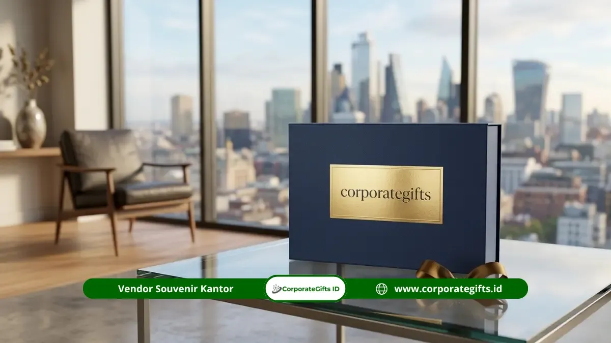

Corporate Gifts ID - Souvenir BUMN untuk apresiasi mitra dan stakeholder adalah produk cinderamata kustom berkualitas tinggi yang diberikan badan usaha milik negara sebagai wujud penghormatan resmi atas kerja sama, dukungan institusional, dan kontribusi strategis yang terjalin selama periode tertentu.
Pemilihan suvenir instansi BUMN memiliki dimensi yang sangat spesifik karena harus mencerminkan wibawa korporasi negara, profesionalisme, serta mematuhi prinsip tata kelola perusahaan yang baik (Good Corporate Governance). Personalisasi logo resmi, kualitas pengerjaan, dan kesesuaian nilai barang menjadi kunci utama agar niat apresiasi tersampaikan secara proporsional. Solusi kurasi cinderamata korporat ini dapat dikonsultasikan bersama Corporate Gifts ID.
Pentingnya Souvenir Apresiasi bagi Mitra dan Stakeholder BUMN
Pemberian souvenir kustom VIP bagi ekosistem BUMN bukan sekadar tradisi seremonial, melainkan bagian integral dari strategi stakeholder relationship management. Di tengah kompetisi industri yang dinamis, hubungan yang harmonis dengan rekanan swasta, instansi kementerian, dan dewan komisaris menjamin kelancaran rantai operasional serta implementasi proyek strategis nasional.
Riset global dari The Business Research Company mencatat lonjakan konsisten pada alokasi gifting korporat sebagai instrumen penguat retensi kemitraan B2B. Bagi institusi pelat merah, suvenir yang dirancang dengan mutu prima memperkokoh reputasi korporasi sebagai entitas terpercaya yang senantiasa mengapresiasi kontribusi pihak eksternal secara berkesinambungan.
Klasifikasi Jenis Souvenir Berdasarkan Level Relasi Kemitraan
Untuk menghindari kesan berlebihan maupun kekurangtepatan protokoler, pemilihan souvenir kantor wajib diselaraskan dengan hierarki hubungan mitra:
1. Mitra Bisnis Operasional dan Vendor Rutin
Rekan kerja harian seperti penyedia jasa logistik, kontraktor pelaksana, atau vendor pengadaan rutin membutuhkan cinderamata yang mengutamakan nilai utilitas harian. Produk seperti tumbler vacuum stainless steel, agenda kerja jilid hardcover, atau tas laptop kanvas tebal sangat tepat karena praktis digunakan dalam mobilitas kerja harian tanpa menimbulkan persepsi gratifikasi yang sensitif.
2. Mitra Strategis dan Rekanan Sinergi Korporat
Untuk rekanan konsorsium proyek, lembaga perbankan penyedia sindikasi, atau sesama entitas anak perusahaan BUMN, paket suvenir yang dipilih harus memancarkan sentuhan modernitas. Gift set teknologi yang memadukan power bank wireless fast charging dengan smart notebook atau desk organizer kulit sintetis menjadi opsi terfavorit yang berkelas tinggi.
3. Stakeholder Kunci, Dewan Pengawas, dan Pejabat Protokoler
Hubungan dengan jajaran dewan komisaris, perwakilan kementerian teknis, atau tamu kehormatan kenegaraan memerlukan cinderamata protokoler formal. Produk yang tepat mencakup plakat kristal optik 3D beremboss logo instansi, pen set premium berlapis emas, atau hamper eksklusif lifestyle dengan kemasan boks kaku (rigid hardbox) bertekstur elegan.

Kombinasi suvenir BUMN eksklusif: power bank custom, pulpen metal grafir laser, dan notebook agenda kulit dalam hardbox mewah.
Matriks Rekomendasi Souvenir BUMN Berdasarkan Level Relasi
Berikut adalah panduan matriks seleksi cinderamata BUMN yang diselaraskan dengan klasifikasi penerima dan kisaran anggaran:
| Level Relasi / Penerima | Karakteristik Mitra | Rekomendasi Paket Souvenir | Estimasi Tier Budget |
|---|---|---|---|
| Mitra Operasional & Vendor Rutin | Kontraktor teknis, supplier berkala, tim operasional rekanan | Tumbler stainless SUS 304, notebook spiral emboss, pulpen metal | Tier 1 (Rp75.000 - Rp175.000) |
| Mitra Bisnis Strategis & B2B Partner | Perbankan, rekanan konsorsium, klien korporasi berskala besar | Smart digital gift set, charging hub meja, clutch organizer kulit | Tier 2 (Rp200.000 - Rp450.000) |
| Stakeholder Kunci & Tamu Protokoler | Dewan pengawas, regulator kementerian, direksi BUMN mitra | Plakat kristal ukir 3D, hamper executive lifestyle, fountain pen grafir | Tier 3 (Rp500.000 - Rp1.250.000+) |
Strategi Menentukan Alokasi Budget dan Tiering Pengadaan
Pengelolaan anggaran belanja suvenir pada sektor BUMN wajib memenuhi parameter kewajaran biaya dan kemudahan pertanggungjawaban audit (akuntabilitas). Dengan menerapkan sistem tiered budgeting, panitia pengadaan dapat merinci alokasi secara transparan:
- Efisiensi Skala Pemesanan: Satukan kebutuhan cinderamata beberapa divisi dalam satu batch pemesanan besar untuk mengamankan harga satuan (unit cost) yang jauh lebih ekonomis.
- Pemisahan Pajak dan Dokumen Resmi: Pastikan vendor mampu menerbitkan faktur pajak resmi (PPN/PPH), e-billing, serta kelengkapan administrasi B2B sesuai regulasi keuangan instansi.
- Kesesuaian Batasan GCG: Pastikan nilai cinderamata berada di dalam batas koridor etika pemberian kenang-kenangan resmi institusi, bukan pemberian gratifikasi personal.
Tips Personalisasi Elemen Visual dan Packaging Souvenir BUMN
Eksklusivitas cinderamata terletak pada presisi detail personalisasinya. Suvenir instansi pemerintah atau BUMN memiliki ketentuan visual ketat yang wajib diakomodasi:
1. Ketepatan Warna Korporat (Pantone Matching)
Warna biru identitas BUMN atau paduan warna khas holding industri Anda harus direproduksi secara presisi, baik pada sablon tumbler, cetak UV notebook, maupun pita kemasan boks.
2. Teknik Laser Engraving Logam
Untuk plakat logam atau pulpen premium, gunakan teknologi grafir serat optik modern yang menghasilkan ukiran nama pejabat penerima dengan tepi yang sangat rapi dan permanen.
3. Kemasan Hardbox dengan Pita Satin
Boks pembungkus kaku berlapis linen halus dengan dudukan busa cetak (die-cut foam) memastikan setiap komponen tertata presisi di tempatnya serta memberikan sensasi unboxing yang mewah.
Momentum Strategis Terbaik untuk Memberikan Souvenir Apresiasi
Menentukan waktu penyerahan cinderamata akan melipatgandakan efek psikologis apresiasi yang dirasakan pihak mitra:
- Penandatanganan Nota Kesepahaman (MoU / MoA): Suvenir diserahkan sebagai simbol resminya komitmen kerja sama baru antar korporasi.
- Peringatan Hari Ulang Tahun (HUT) BUMN: Momen refleksi perayaan pencapaian tahunan bersama seluruh ekosistem rekanan bisnis.
- Penutupan Tahun Fiskal & RUPS: Bentuk rasa terima kasih atas kerja keras dan kontribusi performa mitra sepanjang tahun buku berjalan.
- Kunjungan Kerja Protokoler & Studi Banding: Cinderamata penghormatan resmi saat menyambut delegasi luar instansi atau kementerian.
FAQ Seputar Souvenir BUMN untuk Apresiasi Mitra dan Stakeholder
Kesimpulan Praktis
Souvenir BUMN untuk apresiasi mitra dan stakeholder memegang peran krusial dalam mempererat tali relasi bisnis jangka panjang sekaligus merawat citra positif institusi negara di kancah bisnis nasional. Penentuan item yang cermat, personalisasi elegan, serta kepatuhan pada standar pengadaan yang bersih menjamin suvenir Anda menjadi sarana diplomasi korporat yang efektif.
Konsultasikan kebutuhan cinderamata BUMN institusi Anda bersama tim spesialis Corporate Gifts ID. Kunjungi panduan kami lainnya seputar cara memilih vendor souvenir BUMN sesuai standar pengadaan atau ajukan permintaan proposal penawaran resmi melalui halaman minta penawaran kami.